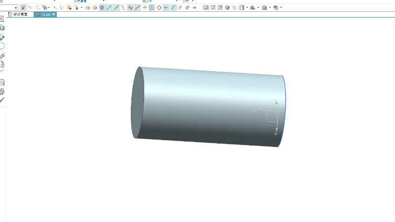
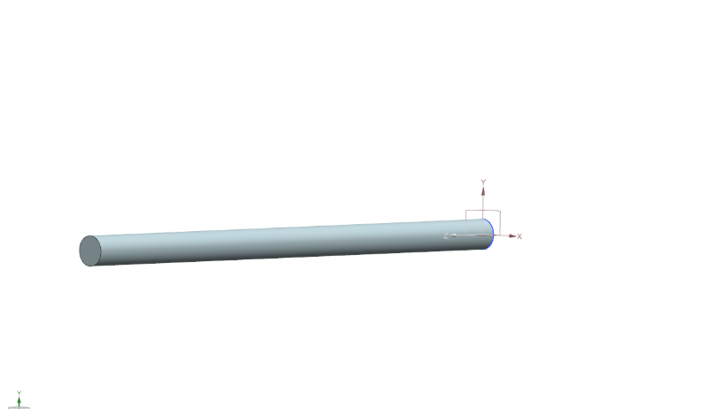

圖片:
零件2:

零件1:

以上是w17時在學校所繪製，因為當時還未知道nx1872能夠錄製，產生py檔。以下是w18繪圖後所產生的py檔和利用py檔回顧繪圖過程的個人錄製影片，我已上傳至個人yt上。
零件2py檔
零件1py檔
不好意思，在錄製零件此影片時，忘記將背景音樂關掉。此背景音樂是我當時操作時在聽的歌曲一個小段。如果覺得好聽可以搜尋:黃品源-白鷺鷥。
Copyright © All rights reserved | This template is made with by Colorlib